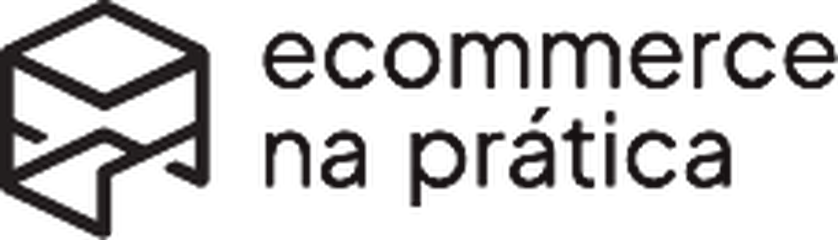
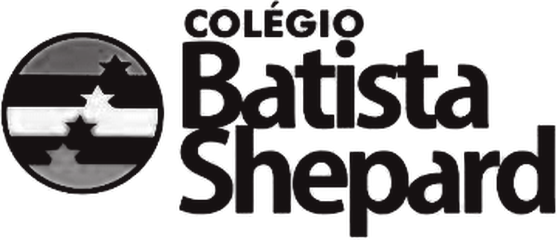
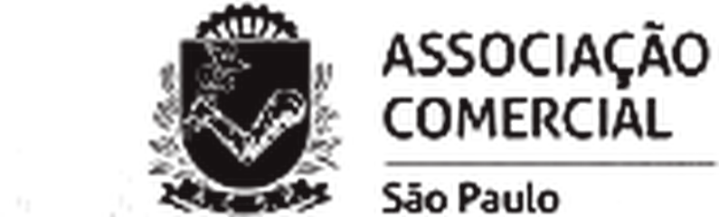

Editor de Vídeo & Motion Designer — Paraty, Brasil
Seu público compra de quem ele sente.
Eu edito essa sensação.
Edição e motion design para canais, marcas e artistas. Da minha mesa de montagem saíram vídeos com mais de um milhão de views, vinhetas para o Bradesco Seguros e videoclipes autorais.
YouTube — Ecommerce na Prática
Captação e edição para o maior canal de ecommerce do Brasil, com 2,2 milhões de inscritos. Os vídeos mais vistos que editei passam de 1,2 milhão de views cada.


Motion Graphics
Vinhetas e animações para marcas e instituições: três peças para Bradesco Seguros, abertura para a FGV EMAp e campanha para o Colégio Batista.


Videoclipes
Direção, captação e edição de clipes autorais com artistas independentes.


Vídeo-Dança & Fashion Film
O corpo em movimento como roteiro: filmes de dança e fashion films dirigidos e editados por mim.
Corporativo & Eventos
Cobertura e edição para eventos, campanhas e institucionais.


Imobiliário
Vídeos que vendem espaços: captação e edição para o mercado imobiliário.


Quem já passou pela mesa
Canais, marcas, escolas e produtoras que já editaram, animaram e filmaram comigo.



Costazul Sushi Rão Estúdio Paralax Banana FilmesEditor de vídeo, motion designer e artesão de histórias.
Moro em Paraty, entre a mata e o mar, e trabalho com clientes do Brasil inteiro. Venho do circo e das artes cênicas: foi lá que aprendi ritmo, tempo e presença — e é disso que um corte é feito. Até hoje é assim que eu perco a noção do tempo: ensinando, tocando música, dançando. É o mesmo estado que procuro em toda montagem.
Nos últimos anos editei para o Ecommerce na Prática, animei vinhetas para o Bradesco Seguros e a FGV EMAp, e dirigi videoclipes e filmes de dança autorais. Na captação, meu lugar é perto das pessoas: escuta primeiro, câmera depois. A dança e o plano-sequência me ensinaram a filmar sem interromper o que está acontecendo.
Gosto de ficha técnica curta e conversa verdadeira, sem julgamento: você explica o projeto, eu devolvo um vídeo que funciona — e que parece com você.
— Uriel Penna, Paraty · atende remoto
Tem um projeto na mesa?
Me conta o que você precisa editar, animar ou filmar. Respondo no WhatsApp, sem formulário e sem intermediário.
Chamar no WhatsApp